* 安装外部命令（首次运行时取消注释执行）
* ssc install synth2, replace
* ssc install rcm, replace
* ssc install sdid, replace all
* ssc install schemepack, replace // 提供 white_tableau 等绘图模板
set scheme white_tableau // 全局绘图风格附录 G — 加州禁烟：SCM/RCM/SDID
本附录是第五章《如果没有政策，会发生什么》的配套实操材料。第五章正文讲思路与适用条件，本附录讲怎么落地：用同一份加州禁烟数据，依次跑通合成控制法（SCM）、Lasso 型合成控制、回归控制法（RCM/GSC）与合成 DID（SDID），并解读关键输出。
运行环境：本文件是 Jupyter Notebook 格式（
.ipynb），可在 VS Code 中借助 nbstata 内核执行 (配置方法参见 数据分析与经济决策 第 2-4 章)，或通过 Stata-MCP 调用本地 Stata 运行。习惯直接在 Stata 中操作的读者，可使用配套的简化版 A05_counterfactual_replication.do（纯代码、无讲解）。数据：香烟消费面板
smoking.dta/prop99_example.dta，39 个州、1970–2000 年，加州（state==3）于 1989 年实施 Proposition 99。前者用于 SCM/Lasso/RCM 部分，后者（Clarke 等提供）用于 SDID 部分，两者是同一案例的不同整理版本。需要的外部命令：
synth2、rcm、sdid、schemepack（绘图模板）。首次运行请先安装（见下一单元）。
G.1 环境准备
首次运行时安装外部命令与绘图模板；已安装可跳过。nbstata 环境下每个代码单元相当于一段 do 文件。
%set graph_width = 6.5in graph size was (8.0in, 6.0in), is now (6.5in, 6.0in).%set graph_height = 4.5in graph size was (6.5in, 6.0in), is now (6.5in, 4.5in).G.2 数据与 donor pool
先载入数据、设定面板结构，并画出第五章开篇那张「加州 vs 其余 38 州」的原始数据图。加州是 state==3，是唯一的处理单位；其余 38 个州构成 donor pool（候选对照池）。
这张图对应正文 图 5.1。它要传达的唯一信息：加州政策后（1989 年竖线右侧）的走势看得见，但「没有政策的加州」这条线不在图上——本附录接下来所有方法，都是在补出这条看不见的线。
* 数据来源（j-hai/synth-stata 镜像），课程包内也附有本地副本
global net "https://github.com/j-hai/synth-stata/raw/refs/heads/main/s"
use "$net/smoking.dta", clear
xtset state year
des // 数据概况：state, year, cigsale 及若干预测变量
sum, sep(0)(Tobacco Sales in 39 US States)
Panel variable: state (strongly balanced)
Time variable: year, 1970 to 2000
Delta: 1 unit
Contains data from https://github.com/j-hai/synth-stata/raw/refs/heads/main/s/s
> moking.dta
Observations: 1,209 Tobacco Sales in 39 US States
Variables: 7 11 Nov 2007 23:38
-------------------------------------------------------------------------------
Variable Storage Display Value
name type format label Variable label
-------------------------------------------------------------------------------
state long %14.0g state state no
year float %9.0g year
cigsale float %9.0g cigarette sale per capita (in
packs)
lnincome float %9.0g log state per capita gdp
beer float %9.0g beer consumption per capita
age15to24 float %9.0g percent of state population aged
15-24 years
retprice float %9.0g retail price of cigarettes
-------------------------------------------------------------------------------
Sorted by: state year
Variable | Obs Mean Std. dev. Min Max
-------------+---------------------------------------------------------
state | 1,209 20 11.25929 1 39
year | 1,209 1985 8.947973 1970 2000
cigsale | 1,209 118.8932 32.7674 40.7 296.2
lnincome | 1,014 9.861634 .1706769 9.397449 10.48662
beer | 546 23.4304 4.22319 2.5 40.4
age15to24 | 819 .175472 .0151589 .1294482 .2036753
retprice | 1,209 108.3419 64.38199 27.3 351.2图 5.1 的绘制：把数据 reshape 成宽格式，加州（cig3）画成黑色粗线，其余 38 州画成浅色细线叠加。
use "$net/smoking.dta", clear
rename (cigsale age15to24 lnincome retprice) (cig age lny p)
reshape wide cig age lny p beer, j(state) i(year)
order year cig* age* lny* p* beer*
keep year cig*
* 生成 38 个 donor pool 州的香烟销售均值
* 注意：cig3 是加州 CA，需要排除
local donor_vars
foreach i of numlist 1 2 4(1)39 {
local donor_vars `donor_vars' cig`i'
}
egen cig_donor_mean = rowmean(`donor_vars')
label var cig_donor_mean "Donor pool mean"
#delimit ;
twoway
(tsline cig3, lcolor(black) lw(medthick)) // 加州 CA
,
ytitle("per-capita cigarette sales (in packs)")
xtitle("Year")
tline(1989, lpattern(shortdash) lcolor(black))
tlabel(1970(5)2000) ylabel(0(50)300);
#delimit cr
* 叠加其余 38 州（donor pool）
foreach i of numlist 1 2 4(1)39 {
addplot: tsline cig`i', ///
lcolor(blue%40) lw(thin) ///
ylabel(0(50)300)
}
* 叠加 38 个 donor pool 州的平均值
* 深绿色；线宽为默认值的 1.3 倍
addplot: tsline cig_donor_mean, ///
lcolor("green*1.3") lw(*1.3) ///
ylabel(0(50)300) ///
legend(order(1 "California" 40 "Donor pool mean") ///
ring(0) pos(2) cols(1))(Tobacco Sales in 39 US States)
(j = 1 2 3 4 5 6 7 8 9 10 11 12 13 14 15 16 17 18 19 20 21 22 23 24 25 26 27 28
> 29 30 31 32 33 34 35 36 37 38 39)
Data Long -> Wide
-----------------------------------------------------------------------------
Number of observations 1,209 -> 31
Number of variables 7 -> 196
j variable (39 values) state -> (dropped)
xij variables:
cig -> cig1 cig2 ... cig39
age -> age1 age2 ... age39
lny -> lny1 lny2 ... lny39
p -> p1 p2 ... p39
beer -> beer1 beer2 ... beer39
-----------------------------------------------------------------------------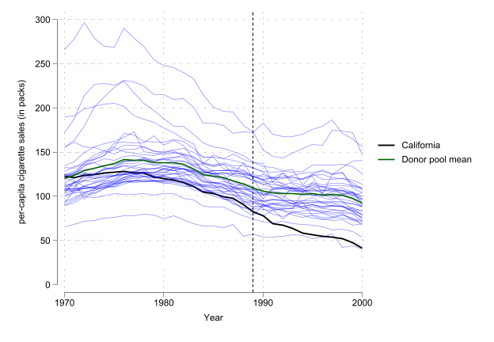
G.3 合成控制法（SCM）
合成控制法用 donor pool 中若干州的加权组合，拼出「合成加州」。synth2 是对经典 synth 的增强版，语法直观、自带出图。
命令逐项解读：
synth2 cigsale <预测变量列表>：被解释变量是cigsale，后面是用于匹配的预测变量；cigsale(1988) cigsale(1980) cigsale(1975)：把特定年份的结果变量也作为匹配目标（政策前多个时点对齐）；trunit(3)：处理单位是第 3 个州（加州）；trperiod(1989)：处理开始于 1989 年；xperiod(1980(1)1988)：预测变量的匹配窗口；fig nested allopt：出图、使用 nested 优化、尝试全部优化器（更稳但更慢）。
use "$net/smoking.dta", clear
xtset state year
synth2 cigsale lnincome age15to24 retprice beer(1984(1)1988) ///
cigsale(1988) cigsale(1980) cigsale(1975), ///
trunit(3) trperiod(1989) xperiod(1980(1)1988) ///
fig nested allopt frame(CAdata)(Tobacco Sales in 39 US States)
Panel variable: state (strongly balanced)
Time variable: year, 1970 to 2000
Delta: 1 unit
Fitting results in the pretreatment periods:
-------------------------------------------------------------------------------
> -
Treated Unit : California Treatment Time : 198
> 9
-------------------------------------------------------------------------------
> -
Number of Control Units = 38 Root Mean Squared Error = 1.7556
> 7
Number of Covariates = 7 R-squared = 0.9743
> 4
-------------------------------------------------------------------------------
> -
Covariate balance in the pretreatment periods:
-------------------------------------------------------------------------------
> -----
Covariate | V.weight Treated Synthetic Control Average Cont
> rol
| Value Bias Value
> Bias
-------------------+-----------------------------------------------------------
> -----
lnincome | 0.0000 10.0766 9.8588 -2.16% 9.8292 -
> 2.45%
age15to24 | 0.5459 0.1735 0.1735 -0.01% 0.1725 -
> 0.59%
retprice | 0.0174 89.4222 89.4108 -0.01% 87.2661 -
> 2.41%
beer(1984(1)1988) | 0.0031 24.2800 24.2278 -0.21% 23.6553 -
> 2.57%
cigsale(1988) | 0.0049 90.1000 91.6677 1.74% 113.8237 2
> 6.33%
cigsale(1980) | 0.0066 120.2000 120.5017 0.25% 138.0895 1
> 4.88%
cigsale(1975) | 0.4221 127.1000 127.1112 0.01% 136.9316
> 7.74%
-------------------------------------------------------------------------------
> -----
Note: "V.weight" is the optimal covariate weight in the diagonal of V matrix.
"Synthetic Control" is the weighted average of donor units with optimal
weights.
"Average Control" is the simple average of all control units with equal
weights.
Optimal Unit Weights:
--------------------------
Unit | U.weight
-------------+------------
Utah | 0.3340
Nevada | 0.2350
Montana | 0.2020
Colorado | 0.1610
Connecticut | 0.0680
--------------------------
Note: The unit Alabama Arkansas Delaware Georgia Idaho Illinois Indiana Iowa
Kansas Kentucky Louisiana Maine Minnesota Mississippi Missouri Nebraska
NewHampshire NewMexico NorthCarolina NorthDakota Ohio Oklahoma
Pennsylvania RhodeIsland SouthCarolina SouthDakota Tennessee Texas
Vermont Virginia WestVirginia Wisconsin Wyoming in the donor pool get a
weight of 0.
Prediction results in the posttreatment periods:
-----------------------------------------------------------
Time | Actual Outcome Synthetic Outcome Treatment Effect
------+----------------------------------------------------
1989 | 82.4000 89.9945 -7.5945
1990 | 77.8000 87.5039 -9.7039
1991 | 68.7000 82.1751 -13.4751
1992 | 67.5000 81.6075 -14.1075
1993 | 63.4000 81.1897 -17.7897
1994 | 58.6000 80.7295 -22.1295
1995 | 56.4000 78.5023 -22.1023
1996 | 54.5000 77.4827 -22.9827
1997 | 53.8000 77.7123 -23.9123
1998 | 52.3000 74.3976 -22.0976
1999 | 47.2000 73.5711 -26.3711
2000 | 41.6000 67.3550 -25.7550
------+----------------------------------------------------
Mean | 60.3500 79.3518 -19.0018
-----------------------------------------------------------
Note: The average treatment effect over the posttreatment period is -19.0018.
Finished.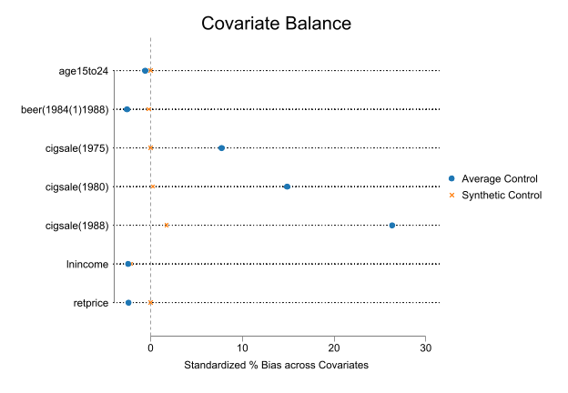
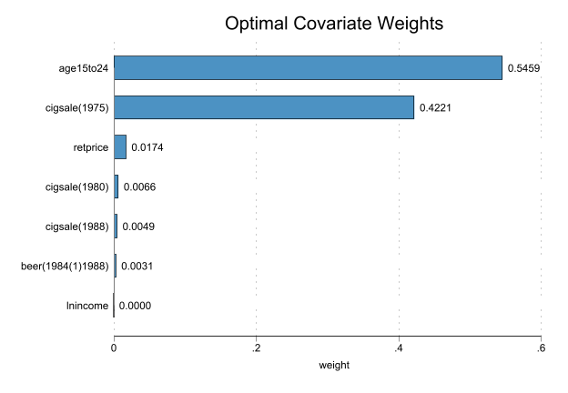
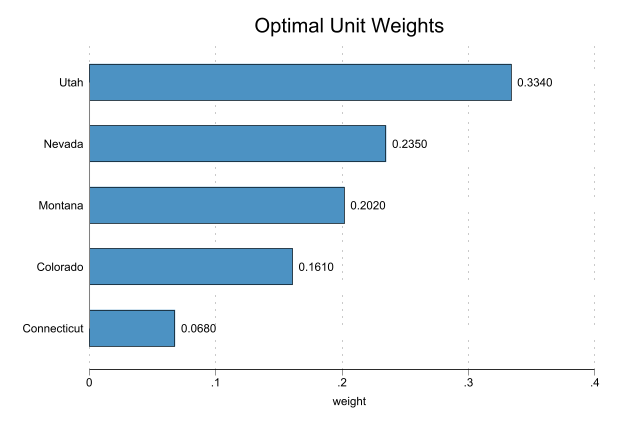
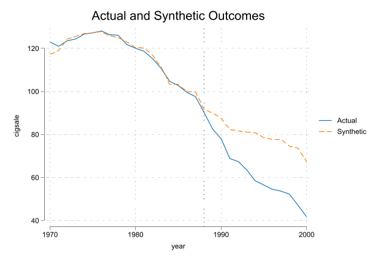
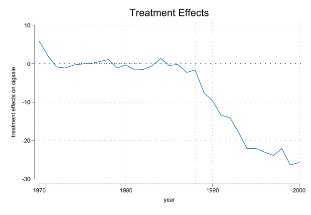
输出解读 1：单位权重（Optimal Unit Weights）
synth2 在 38 个州里只给 5 个州分配了非零权重，其余 33 个州权重为零：
| 州 | 权重 |
|---|---|
| Utah 犹他 | 0.334 |
| Nevada 内华达 | 0.235 |
| Montana 蒙大拿 | 0.202 |
| Colorado 科罗拉多 | 0.161 |
| Connecticut 康涅狄格 | 0.068 |
这 5 个权重非负、且加总为 1（0.334+0.235+0.202+0.161+0.068 = 1.000），正是第五章强调的凸组合约束。所谓「合成加州」，就是这 5 条州曲线按此权重的加权平均——一个具体的「配方」。
输出解读 2：预测变量平衡表
synth2 还会报告 R-squared（本例约 0.974）与一张平衡表，对比「真实加州」「合成加州」「所有对照州简单平均」在各预测变量上的取值。合成加州应当在多数预测变量上比简单平均更贴近真实加州——这是 SCM 相对 DID 的改进所在。
导出三张图：synth2 把结果存在若干命名图形里，逐一显示并导出。
* Table 1 的可视化（真实/合成/简单平均 三者对比）
graph display bias
graph export "scm-rcm-Abadie10-Tab01-Fig.png", replace width(900)
* Figure 2：真实加州 vs 合成加州（政策前拟合 + 政策后缺口）
graph display pred
graph export "scm-Abadie2010-Fig02-pred.png", replace width(900)
* Figure 3：处理效应 = 真实 − 合成（政策后的差距）
graph display eff
graph export "scm-Abadie2010-Fig03-TE.png", replace width(900)file scm-rcm-Abadie10-Tab01-Fig.png written in PNG format
file scm-Abadie2010-Fig02-pred.png written in PNG format
file scm-Abadie2010-Fig03-TE.png written in PNG format


核心图：5 个非零权重州（正文图 5.2）
这张图把 5 个非零权重州高亮出来，其余州压成灰色背景。它是理解 SCM 最直观的一张图——抽象的「凸组合权重」在这里变成「三分之一个犹他 + 四分之一个内华达 + ……」。图例里直接标出每个州的权重。
use "$net/smoking.dta", clear
qui rename (cigsale) (cig)
qui keep state year cig
qui reshape wide cig, j(state) i(year)
qui order year cig*
qui keep year cig*
set scheme rainbow
#delimit ;
twoway
(tsline cig3, lcolor(black) lw(*1.5)) // 加州 CA
,
ytitle("per-capita cigarette sales (in packs)")
xtitle("Year")
tline(1988, lp(shortdash) lc(black))
tlabel(1970(5)2000) tmtick(##5)
ylabel(0(50)300)
aspect(0.8) ysize(4) xsize(5.5)
legend(order(1 "CA"));
#delimit cr
* 其余州压成灰色背景
foreach i of numlist 1 2 4(1)39 {
addplot: tsline cig`i', lcolor(black*0.7%30) lw(*0.6) lp(solid) ///
ylabel(0(50)300) tlabel(1970(5)2000) tmtick(##5) ///
legend(order(1 "CA" 2 "rest"))
}
* 高亮 5 个非零权重州
foreach i of numlist 34 21 19 4 5 {
addplot: tsline cig`i', lw(*1) lp(solid) ///
ylabel(0(50)300) tlabel(1970(5)2000) tmtick(##5) ///
legend(order(1 "CA" 2 "rest" ///
40 "Utah, 0.334" 41 "Nevada, 0.235" ///
42 "Montana, 0.202" 43 "Colorado, 0.161" ///
44 "Connecticut, 0.068") row(2))
}
graph export "scm-Figure0-non-zero-weights.png", replace width(900)
set scheme white_tableau(Tobacco Sales in 39 US States)
file scm-Figure0-non-zero-weights.png written in PNG format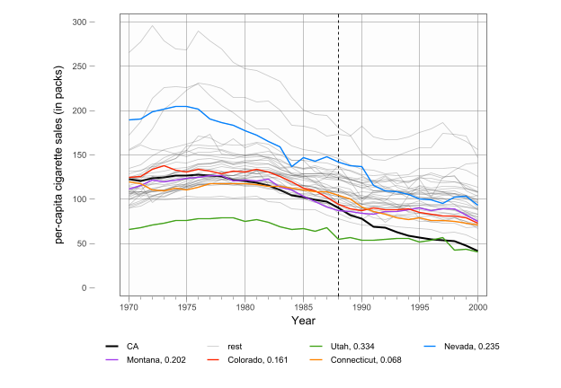
SCM 小结与局限
- 反事实来源：donor pool 的凸组合；
- 识别压力：donor pool 纯净性（对照州不能受类似控烟政策污染）、预测变量选择、政策前拟合质量；
- 推断：因只有一个处理单位，依赖安慰剂/置换检验（把每个对照州轮流当假处理组，看真实加州的政策后缺口是否显著异常）；
- 约束的代价：凸组合防止了危险外推，但若真实反事实不在 donor pool 凸包内，政策前会拟合不好。
G.4 Lasso 型合成控制：放开约束会怎样
第五章讲到 SCM 与 RCM 的差别是「约束 vs 灵活」。这一节用 Lasso 直接演示：把 SCM 的「非负、加总为一」约束换成 Lasso 惩罚，选出的对照州会不同，还会出现负系数和截距。
先把数据转成宽格式（每个州的 cigsale 成为一列），加州记为 cig0。
use "$net/smoking.dta", clear
replace state = 0 if state == 3 // 把加州改记为 0，便于作被解释变量
rename (cigsale age15to24 lnincome retprice) (cig age lny p)
reshape wide cig age lny p beer, j(state) i(year)
order year cig* age* lny* p* beer*
save "smoking_wide.dta", replace(Tobacco Sales in 39 US States)
(31 real changes made)
(j = 0 1 2 4 5 6 7 8 9 10 11 12 13 14 15 16 17 18 19 20 21 22 23 24 25 26 27 28
> 29 30 31 32 33 34 35 36 37 38 39)
Data Long -> Wide
-----------------------------------------------------------------------------
Number of observations 1,209 -> 31
Number of variables 7 -> 196
j variable (39 values) state -> (dropped)
xij variables:
cig -> cig0 cig1 ... cig39
age -> age0 age1 ... age39
lny -> lny0 lny1 ... lny39
p -> p0 p1 ... p39
beer -> beer0 beer1 ... beer39
-----------------------------------------------------------------------------
(file smoking_wide.dta not found)
file smoking_wide.dta savedLasso 选州（plugin 选 λ）
用政策前样本（year <= 1989）把加州 cig0 对其余各州回归，Lasso 自动做变量选择。select(plugin) 用理论公式确定惩罚参数 λ。
use "smoking_wide.dta", clear
global TreatYear = 1989
lasso linear cig0 cig1-cig39 lny1-lny39 if year <= $TreatYear, select(plugin)
lassocoef // 查看被选中的州(Tobacco Sales in 39 US States)
Computing plugin lambda ...
Iteration 1: lambda = .9364963 no. of nonzero coef. = 6
Iteration 2: lambda = .9364963 no. of nonzero coef. = 8
Iteration 3: lambda = .9364963 no. of nonzero coef. = 7
Iteration 4: lambda = .9364963 no. of nonzero coef. = 6
Iteration 5: lambda = .9364963 no. of nonzero coef. = 6
Lasso linear model No. of obs = 18
No. of covariates = 76
Selection: Plugin heteroskedastic
--------------------------------------------------------------------------
| No. of
| nonzero In-sample
ID | Description lambda coef. R-squared BIC
---------+----------------------------------------------------------------
* 1 | selected lambda .9364963 6 0.9961 65.73252
--------------------------------------------------------------------------
* lambda selected by plugin formula assuming heteroskedastic errors.
------------------------
| active
-------------+----------
cig8 | x
cig15 | x
cig19 | x
cig21 | x
cig29 | x
cig34 | x
_cons | x
------------------------
Legend:
b - base level
e - empty cell
o - omitted
x - estimated输出对比：Lasso vs synth2 选出的州
- Lasso（plugin）选中：cig8, cig15, cig19, cig21, cig29, cig34 + 截距
- synth2 选中：cig4, cig5, cig19, cig21, cig34
两者部分重叠（都选了 19=Montana、21=Nevada、34=Utah），但不完全相同。关键区别：Lasso 放开了非负与加总为一的约束，可以选出负系数、并带一个非零截距。同一份数据、同一个处理组，约束松一档，反事实的「配方」就换了一副面孔——这正是第五章「约束 vs 灵活」权衡的活教材。
Lasso 反事实与 gap 图
用惩罚系数（cig0_lasso）与后选择无惩罚系数（cig0_post，即 post-Lasso OLS）两种方式预测加州反事实，画出真实加州、两条合成线及其 gap。
cap dropvars cig0_lasso cig0_post gap*
predict cig0_lasso // 惩罚系数预测
predict cig0_post, postselection // 后选择（无惩罚）系数预测
gen gap_lasso = cig0 - cig0_lasso
gen gap_post = cig0 - cig0_post
#delimit ;
tw (line cig0 year, lc(black))
(line cig0_lasso year, lc(red))
(line cig0_post year, lc(blue))
(line gap_lasso year, lc(red) lp(dash))
(line gap_post year, lc(blue) lp(dash))
,
ylabel(-40(20)140) xlabel(1972(4)2000)
xline($TreatYear 1988, lc(gray) lp(dash_dot))
yline(0, lc(black) lp(dot))
xtitle("year") ytitle("per-capita cigarette sales (packs)")
legend(order(1 "CA" 2 "syn-Lasso" 3 "syn-Post-Lasso" 4 "Gap")
ring(0) col(1) pos(2))
aspect(0.8);
#delimit cr(options xb penalized assumed; linear prediction with penalized coefficients)
(option xb assumed; linear prediction with postselection coefficients)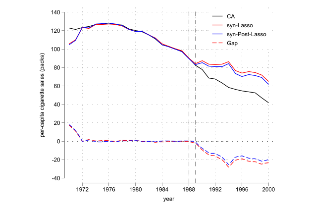
进阶：λ 的选择与时间安慰剂检验（可选）
除 plugin 外，还可用交叉验证（cv）或自适应交叉验证（adaptive）选 λ。把「处理年份」提前到真实政策之前（如 1984）做时间安慰剂检验：如果在假想的政策年也测出明显 gap，说明方法在制造假阳性。下面三段分别用 plugin / CV / adaptive 演示，均把 TreatYear 设为 1984。
cap program drop lasso_smoking_graph
program define lasso_smoking_graph
#d ;
tw (line cig0 year, lc(black))
(line cig0_lasso year, lc(red))
(line cig0_post year, lc(blue))
(line gap_lasso year, lc(red) lp(dash))
(line gap_post year, lc(blue) lp(dash))
,
ylabel(-40(20)140) xlabel(1972(4)2000)
xline($TreatYear 1988, lc(gray) lp(dash_dot))
yline(0, lc(black) lp(dot))
xtitle("year") ytitle("per-capita cigarette sales (packs)")
legend(order(1 "CA" 2 "syn-Lasso" 3 "syn-Post-Lasso" 4 "Gap") ring(0) col(1) pos(2))
aspect(0.8) ; //scheme(s1mono)
#d cr
end* A. plugin，安慰剂年 1984
use "smoking_wide.dta", clear
global TreatYear = 1984
lasso linear cig0 cig1-cig39 lny1-lny39 if year <= $TreatYear, select(plugin)
cap dropvars cig0_lasso cig0_post gap*
predict cig0_lasso
predict cig0_post, postselect
gen gap_lasso = cig0 - cig0_lasso
gen gap_post = cig0 - cig0_post
lasso_smoking_graph // 绘图, 自编程序(Tobacco Sales in 39 US States)
Computing plugin lambda ...
Iteration 1: lambda = 1.101972 no. of nonzero coef. = 4
Iteration 2: lambda = 1.101972 no. of nonzero coef. = 4
Lasso linear model No. of obs = 13
No. of covariates = 76
Selection: Plugin heteroskedastic
--------------------------------------------------------------------------
| No. of
| nonzero In-sample
ID | Description lambda coef. R-squared BIC
---------+----------------------------------------------------------------
* 1 | selected lambda 1.101972 4 0.9226 66.18965
--------------------------------------------------------------------------
* lambda selected by plugin formula assuming heteroskedastic errors.
(options xb penalized assumed; linear prediction with penalized coefficients)
(option xb assumed; linear prediction with postselection coefficients)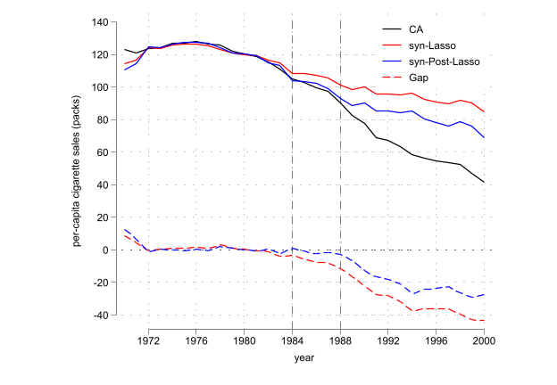
* B. 10 折交叉验证选 λ，安慰剂年 1984
use "smoking_wide.dta", clear
global TreatYear = 1984
lasso linear cig0 cig1-cig39 lny1-lny39 ///
if year <= $TreatYear, ///
select(cv, fold(10)) ///
nolog
cap dropvars cig0_lasso cig0_post gap*
predict cig0_lasso
predict cig0_post, postselect
gen gap_lasso = cig0 - cig0_lasso
gen gap_post = cig0 - cig0_post
lasso_smoking_graph // 绘图, 自编程序
* 注：若 TreatYear<=1983 则政策前样本太少，10 折 CV 无法执行(Tobacco Sales in 39 US States)
Lasso linear model No. of obs = 13
No. of covariates = 76
Selection: Cross-validation No. of CV folds = 10
--------------------------------------------------------------------------
| No. of Out-of- CV mean
| nonzero sample prediction
ID | Description lambda coef. R-squared error
---------+----------------------------------------------------------------
1 | first lambda 6.481684 0 -0.1541 52.97234
84 | lambda before .1364332 7 0.9865 .6183389
* 85 | selected lambda .1302321 7 0.9866 .6170244
86 | lambda after .1243129 7 0.9865 .6179679
88 | last lambda .1132693 8 0.9863 .6275179
--------------------------------------------------------------------------
* lambda selected by cross-validation.
(options xb penalized assumed; linear prediction with penalized coefficients)
(option xb assumed; linear prediction with postselection coefficients)
(5 missing values generated)
(5 missing values generated)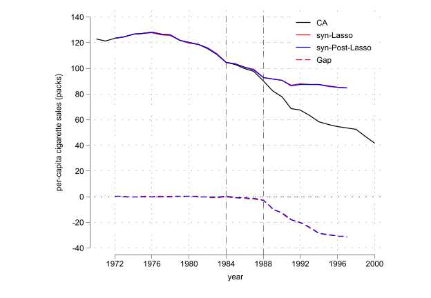
* C. 自适应 CV 选 λ，安慰剂年 1984
use "smoking_wide.dta", clear
global TreatYear = 1984
lasso linear cig0 cig1-cig39 lny1-lny39 ///
if year <= $TreatYear, ///
select(adaptive, fold(10)) ///
nolog
cap dropvars cig0_lasso cig0_post gap*
predict cig0_lasso
predict cig0_post, postselect
gen gap_lasso = cig0 - cig0_lasso
gen gap_post = cig0 - cig0_post
lasso_smoking_graph // 绘图, 自编程序(Tobacco Sales in 39 US States)
Lasso linear model No. of obs = 13
No. of covariates = 76
Selection: Adaptive No. of lasso steps = 2
Final adaptive step results
--------------------------------------------------------------------------
| No. of Out-of- CV mean
| nonzero sample prediction
ID | Description lambda coef. R-squared error
---------+----------------------------------------------------------------
98 | first lambda 1493.126 0 -0.1400 52.32459
166 | lambda before 2.670679 6 0.9883 .5367961
* 167 | selected lambda 2.433423 6 0.9883 .5357959
168 | lambda after 2.217244 6 0.9883 .5373354
184 | last lambda .5004364 7 0.9871 .5913224
--------------------------------------------------------------------------
* lambda selected by cross-validation in final adaptive step.
(options xb penalized assumed; linear prediction with penalized coefficients)
(option xb assumed; linear prediction with postselection coefficients)
(5 missing values generated)
(5 missing values generated)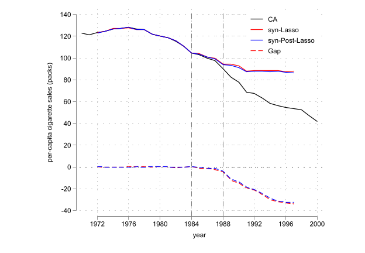
小结：
- CV 与 adaptive-CV 更偏向「预测」，但样本不能太小（政策前时期太少会失败）；
- 本例中若用 CV，Lasso 与 post-Lasso 的差异很小；
- 改变
fold()的数值可观察结果变化；当 K=N 时，K 折 CV 退化为 Jackknife。
Lasso 是通向 RCM 的桥：它演示了「放开凸组合约束 + 正则化选参」的思路，而 RCM 把这套思路系统化为一个可直接调用的命令。
G.5 回归控制法（RCM / GSC）
rcm 命令把上一节的思路封装起来：用未处理样本学习结构、预测处理组的无政策路径，可选 Lasso 做单位选择。语法极简：
frame reset
use "$net/smoking.dta", clear
xtset state year
rcm cig, trunit(3) trperiod(1989) method(lasso) criterion(cv) frame(te)
* 导出两张图
graph display pred // 真实 vs 预测（反事实）
graph export "rcm-Abadie2010-Fig02.png", replace width(900)
graph display eff // 处理效应
graph export "rcm-Abadie2010-Fig03.png", replace width(900)(Tobacco Sales in 39 US States)
Panel variable: state (strongly balanced)
Time variable: year, 1970 to 2000
Delta: 1 unit
Step 1: Select the suboptimal models
(method lasso specified)
Selecting the suboptimal model...
Step 2: Select the optimal model from the suboptimal models
(criterion cv specified for leave-one-out cross-validation)
Comparing the suboptimal models containing different set of predictors:
--------------------------------------------------------------------
K | lambda CVMSE R-squared | Operation
----+------------------------------------+--------------------------
1 | 10.3926 138.5578 0.0814 | add cigsale·NewHampshire
2 | 8.2359 100.4864 0.3957 | add cigsale·Montana
3 | 6.5268 69.0261 0.6068 | add cigsale·Nevada
4 | 3.4031 23.8443 0.8784 | add cigsale·Colorado
5 | 2.5743 16.4272 0.9222 | add cigsale·Illinois
6 | 1.6167 9.7903 0.9623 | add cigsale·Connecticut
7 | 0.8047 5.9113 0.9853 | add cigsale·Nebraska
8 | 0.4605 5.0471 0.9906 | add cigsale·Utah
9 | 0.3823 5.1855 0.9916 | add cigsale·Tennessee
10 | 0.3029 5.2701 0.9939 | add cigsale·WestVirginia
11 | 0.1903 4.4754 0.9968 | add cigsale·Idaho
10 | 0.1089 3.7906 0.9983 | drop cigsale·NewHampshire
--------------------------------------------------------------------
Among models with 1-38 predictors, the optimal model contains 10 predictors
with CVMSE = 3.7906.
Fitting results in the pretreatment period using post-lasso OLS:
------------------------------------------------------------------------------
Treated Unit : Califor~a Treatment Time = 1989
------------------------------------------------------------------------------
Number of Observations = 19 Root Mean Squared Error = 0.58169
Number of Predictors = 10 R-squared = 0.99890
------------------------------------------------------------------------------
------------------------------------------------------------------------------
cigsale·Ca~a | Coefficient Std. err. t P>|t| [95% conf. interval]
-------------+----------------------------------------------------------------
cigsale·Co~o | 0.0401 0.0591 0.68 0.516 -0.0961 0.1763
cigsale·Co~t | 0.1555 0.0823 1.89 0.096 -0.0343 0.3453
cigsale·Id~o | 0.0977 0.0770 1.27 0.240 -0.0798 0.2752
cigsale·Il~s | 0.1636 0.0830 1.97 0.084 -0.0278 0.3551
cigsale·Mo~a | 0.0790 0.0941 0.84 0.426 -0.1381 0.2961
cigsale·N~ka | 0.2223 0.1121 1.98 0.083 -0.0362 0.4808
cigsale·N~da | 0.1449 0.0234 6.20 0.000 0.0910 0.1988
cigsale·Te~e | -0.3288 0.0506 -6.50 0.000 -0.4455 -0.2121
cigsale·Utah | 0.2553 0.1065 2.40 0.043 0.0098 0.5008
cigsale·We~a | 0.1059 0.0499 2.12 0.067 -0.0093 0.2211
_cons | 12.1112 10.1978 1.19 0.269 -11.4050 35.6275
------------------------------------------------------------------------------
Prediction results in the posttreatment period using post-lasso OLS:
-----------------------------------------------------------
Time | Actual Outcome Predicted Outcome Treatment Effect
------+----------------------------------------------------
1989 | 82.4000 88.3050 -5.9050
1990 | 77.8000 85.2309 -7.4309
1991 | 68.7000 81.7155 -13.0155
1992 | 67.5000 80.0131 -12.5131
1993 | 63.4000 81.0122 -17.6122
1994 | 58.6000 78.2354 -19.6354
1995 | 56.4000 74.9933 -18.5933
1996 | 54.5000 74.7744 -20.2744
1997 | 53.8000 74.9967 -21.1967
1998 | 52.3000 71.8880 -19.5880
1999 | 47.2000 71.8063 -24.6063
2000 | 41.6000 66.9323 -25.3324
------+----------------------------------------------------
Mean | 60.3500 77.4919 -17.1419
-----------------------------------------------------------
Note: The average treatment effect over the posttreatment period is -17.1419.
Finished.
file rcm-Abadie2010-Fig02.png written in PNG format
file rcm-Abadie2010-Fig03.png written in PNG format

输出解读：post-lasso OLS 的系数
rcm 报告政策前用 post-lasso OLS 拟合的系数（本例 R² ≈ 0.98）：
| 预测州 | 系数 |
|---|---|
| Colorado | 0.063 |
| Montana | 0.418 |
| Nevada | 0.218 |
| New Hampshire | 0.038 |
截距 _cons |
12.46 |
对照 F.3 的 SCM 权重（都非负、加总为 1），这里的系数没有非负约束、不加总为 1、还带一个 12.46 的截距。这就是「约束 vs 灵活」在数值上的直接体现：RCM 换取了更强的拟合，代价是系数不再有「配方份额」那样干净的解释。
处理效应：政策后各年的处理效应从 1989 年的约 −8 逐步扩大到 2000 年的约 −33，政策后期平均约 −23.1（packs per capita）。注意这个数字与 SCM、SDID 的口径不同（见 F.7 对比），不能直接比较哪个「更准」。
G.5.1 安慰剂检验
包括两类：
- 截面安慰剂检验：把每个对照州轮流当假处理组，计算其 gap，画出真实加州的 gap 是否显著异常；
- 时间安慰剂检验：把处理年份提前到真实政策之前（如 1985），看是否也测出明显 gap。
上述两个检验可以通过 placebo() 选项一次性完成。
//Implement placebo tests using all fake treatment units in the donor pool, and fake treatment time 1985
rcm cig, trunit(3) trperiod(1989) method(lasso) criterion(cv) ///
placebo(unit period(1984))
Step 1: Select the suboptimal models
(method lasso specified)
Selecting the suboptimal model...
Step 2: Select the optimal model from the suboptimal models
(criterion cv specified for leave-one-out cross-validation)
Comparing the suboptimal models containing different set of predictors:
--------------------------------------------------------------------
K | lambda CVMSE R-squared | Operation
----+------------------------------------+--------------------------
1 | 10.3926 138.5578 0.0814 | add cigsale·NewHampshire
2 | 8.2359 100.4864 0.3957 | add cigsale·Montana
3 | 6.5268 69.0261 0.6068 | add cigsale·Nevada
4 | 3.4031 23.8443 0.8784 | add cigsale·Colorado
5 | 2.5743 16.4272 0.9222 | add cigsale·Illinois
6 | 1.6167 9.7903 0.9623 | add cigsale·Connecticut
7 | 0.8047 5.9113 0.9853 | add cigsale·Nebraska
8 | 0.4605 5.0471 0.9906 | add cigsale·Utah
9 | 0.3823 5.1855 0.9916 | add cigsale·Tennessee
10 | 0.3029 5.2701 0.9939 | add cigsale·WestVirginia
11 | 0.1903 4.4754 0.9968 | add cigsale·Idaho
10 | 0.1089 3.7906 0.9983 | drop cigsale·NewHampshire
--------------------------------------------------------------------
Among models with 1-38 predictors, the optimal model contains 10 predictors
with CVMSE = 3.7906.
Fitting results in the pretreatment period using post-lasso OLS:
------------------------------------------------------------------------------
Treated Unit : Califor~a Treatment Time = 1989
------------------------------------------------------------------------------
Number of Observations = 19 Root Mean Squared Error = 0.58169
Number of Predictors = 10 R-squared = 0.99890
------------------------------------------------------------------------------
------------------------------------------------------------------------------
cigsale·Ca~a | Coefficient Std. err. t P>|t| [95% conf. interval]
-------------+----------------------------------------------------------------
cigsale·Co~o | 0.0401 0.0591 0.68 0.516 -0.0961 0.1763
cigsale·Co~t | 0.1555 0.0823 1.89 0.096 -0.0343 0.3453
cigsale·Id~o | 0.0977 0.0770 1.27 0.240 -0.0798 0.2752
cigsale·Il~s | 0.1636 0.0830 1.97 0.084 -0.0278 0.3551
cigsale·Mo~a | 0.0790 0.0941 0.84 0.426 -0.1381 0.2961
cigsale·N~ka | 0.2223 0.1121 1.98 0.083 -0.0362 0.4808
cigsale·N~da | 0.1449 0.0234 6.20 0.000 0.0910 0.1988
cigsale·Te~e | -0.3288 0.0506 -6.50 0.000 -0.4455 -0.2121
cigsale·Utah | 0.2553 0.1065 2.40 0.043 0.0098 0.5008
cigsale·We~a | 0.1059 0.0499 2.12 0.067 -0.0093 0.2211
_cons | 12.1112 10.1978 1.19 0.269 -11.4050 35.6275
------------------------------------------------------------------------------
Prediction results in the posttreatment period using post-lasso OLS:
-----------------------------------------------------------
Time | Actual Outcome Predicted Outcome Treatment Effect
------+----------------------------------------------------
1989 | 82.4000 88.3050 -5.9050
1990 | 77.8000 85.2309 -7.4309
1991 | 68.7000 81.7155 -13.0155
1992 | 67.5000 80.0131 -12.5131
1993 | 63.4000 81.0122 -17.6122
1994 | 58.6000 78.2354 -19.6354
1995 | 56.4000 74.9933 -18.5933
1996 | 54.5000 74.7744 -20.2744
1997 | 53.8000 74.9967 -21.1967
1998 | 52.3000 71.8880 -19.5880
1999 | 47.2000 71.8063 -24.6063
2000 | 41.6000 66.9323 -25.3324
------+----------------------------------------------------
Mean | 60.3500 77.4919 -17.1419
-----------------------------------------------------------
Note: The average treatment effect over the posttreatment period is -17.1419.
Implementing in-space placebo test using fake treatment unit Alabama...Arkansas
> ...Colorado...Connecticut...Delaware...Georgia...Idaho...Illinois...Indiana..
> .Iowa...Kansas...Kentucky...Louisiana...Maine...Minnesota...Mississippi...Mis
> souri...Montana...Nebraska...Nevada...NewHampshire...NewMexico...NorthCarolin
> a...NorthDakota...Ohio...Oklahoma...Pennsylvania...RhodeIsland...SouthCarolin
> a...SouthDakota...Tennessee...Texas...Utah...Vermont...Virginia...WestVirgini
> a...Wisconsin...Wyoming...
In-space placebo test results using fake treatment units:
-------------------------------------------------------------------------------
Unit | Pre MSPE Post MSPE Post/Pre MSPE Pre MSPE of Fake Unit/
| Pre MSPE of Treated Unit
---------------+---------------------------------------------------------------
California | 0.3384 329.0633 972.5173 1.0000
Alabama | 0.9072 54.9255 60.5424 2.6812
Arkansas | 1.1922 19.6078 16.4466 3.5235
Colorado | 4.1426 24.0732 5.8111 12.2431
Connecticut | 1.0216 504.8030 494.1413 3.0192
Delaware | 1.9630 103.4568 52.7029 5.8015
Georgia | 1.1261 258.8375 229.8481 3.3282
Idaho | 6.6522 43.5348 6.5444 19.6600
Illinois | 3.0723 23.0302 7.4960 9.0800
Indiana | 12.3106 7.2096 0.5856 36.3830
Iowa | 8.7781 1046.8045 119.2514 25.9430
Kansas | 9.1591 11.4804 1.2534 27.0689
Kentucky | 7.2148 3390.5614 469.9473 21.3226
Louisiana | 0.5579 175.4502 314.4600 1.6489
Maine | 6.8918 205.9667 29.8857 20.3682
Minnesota | 12.0828 218.2688 18.0645 35.7095
Mississippi | 0.7528 54.0167 71.7543 2.2248
Missouri | 0.2493 87.6291 351.4534 0.7369
Montana | 2.3828 426.6798 179.0652 7.0422
Nebraska | 0.3644 15.4478 42.3955 1.0769
Nevada | 20.3267 426.0337 20.9594 60.0736
NewHampshire | 28.2646 681.3402 24.1058 83.5335
NewMexico | 2.1847 22.6750 10.3788 6.4568
NorthCarolina | 14.9268 264.9914 17.7528 44.1147
NorthDakota | 2.9056 39.4738 13.5852 8.5874
Ohio | 0.4054 38.8056 95.7282 1.1980
Oklahoma | 1.5424 464.4083 301.1029 4.5583
Pennsylvania | 1.5488 5.5210 3.5646 4.5775
RhodeIsland | 7.8156 3762.3328 481.3853 23.0984
SouthCarolina | 0.3955 164.4681 415.8650 1.1688
SouthDakota | 2.5512 32.6110 12.7826 7.5399
Tennessee | 2.1977 23.5144 10.6993 6.4952
Texas | 0.8704 200.4718 230.3311 2.5723
Utah | 2.1962 21.5140 9.7961 6.4906
Vermont | 6.6915 112.5418 16.8186 19.7762
Virginia | 1.0531 326.7857 310.3149 3.1123
WestVirginia | 2.9818 684.1183 229.4281 8.8126
Wisconsin | 2.7930 50.2112 17.9775 8.2545
Wyoming | 15.6433 1660.3462 106.1378 46.2324
-------------------------------------------------------------------------------
Note: The probability of obtaining a post/pretreatment MSPE ratio as large as
California's is 0.0256.
In-space placebo test results using fake treatment units (continued):
----------------------------------------------------------------
Time | Treatment Effect p-value of Treatment Effect
| Two-sided Right-sided Left-sided
------+---------------------------------------------------------
1989 | -5.9050 0.1795 0.9231 0.1026
1990 | -7.4309 0.4103 0.8462 0.1795
1991 | -13.0155 0.2564 0.8974 0.1282
1992 | -12.5131 0.2821 0.8974 0.1282
1993 | -17.6122 0.2308 0.8974 0.1282
1994 | -19.6354 0.2821 0.8974 0.1282
1995 | -18.5933 0.3333 0.8462 0.1795
1996 | -20.2744 0.2821 0.8974 0.1282
1997 | -21.1967 0.2564 0.9231 0.1026
1998 | -19.5880 0.3590 0.8718 0.1538
1999 | -24.6063 0.2564 0.9487 0.0769
2000 | -25.3324 0.2821 0.9487 0.0769
----------------------------------------------------------------
Note: (1) The two-sided p-value of the treatment effect for a particular
period is defined as the frequency that the absolute values of the
placebo effects are greater than or equal to the absolute value of
treatment effect.
(2) The right-sided (left-sided) p-value of the treatment effect for a
particular period is defined as the frequency that the placebo effects
are greater (smaller) than or equal to the treatment effect.
(3) If the estimated treatment effect is positive, then the right-sided
p-value is recommended; whereas the left-sided p-value is recommended
if the estimated treatment effect is negative.
Implementing in-time placebo test using fake treatment time 1984...
In-time placebo test results using fake treatment time 1984:
-----------------------------------------------------------
Time | Actual Outcome Predicted Outcome Treatment Effect
------+----------------------------------------------------
1984 | 104.8000 103.0105 1.7895
1985 | 102.8000 105.5193 -2.7193
1986 | 99.7000 104.2389 -4.5389
1987 | 97.5000 105.1217 -7.6217
1988 | 90.1000 102.2364 -12.1364
1989 | 82.4000 98.5779 -16.1779
1990 | 77.8000 95.8314 -18.0314
1991 | 68.7000 87.3190 -18.6190
1992 | 67.5000 84.9525 -17.4525
1993 | 63.4000 85.5245 -22.1245
1994 | 58.6000 82.9465 -24.3465
1995 | 56.4000 84.7783 -28.3783
1996 | 54.5000 82.9162 -28.4162
1997 | 53.8000 82.0870 -28.2870
1998 | 52.3000 83.7798 -31.4798
1999 | 47.2000 83.0519 -35.8519
2000 | 41.6000 78.2107 -36.6107
------+----------------------------------------------------
Mean | 71.7118 91.1825 -19.4707
-----------------------------------------------------------
Note: The average treatment effect over the posttreatment period is -19.4707.
Finished.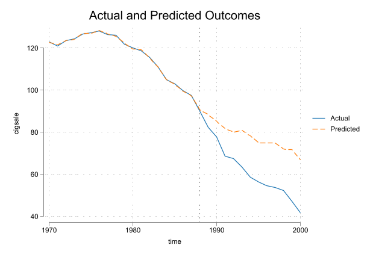
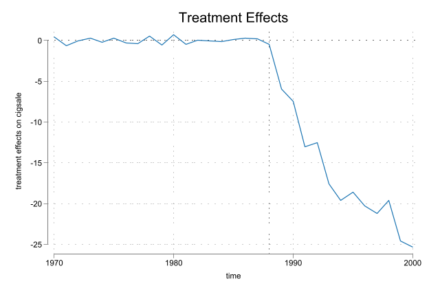
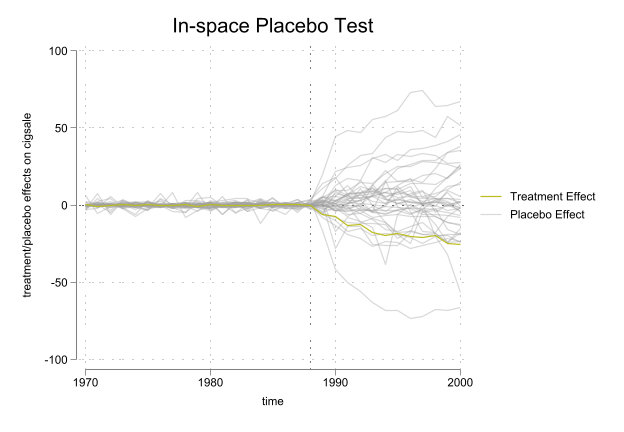
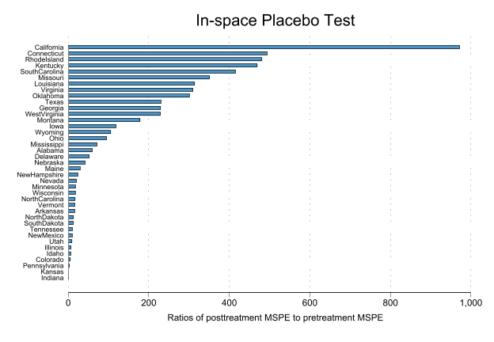
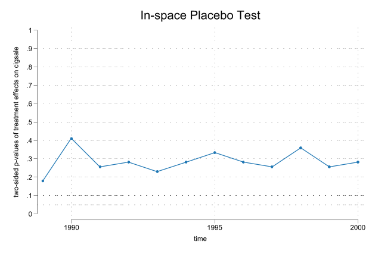
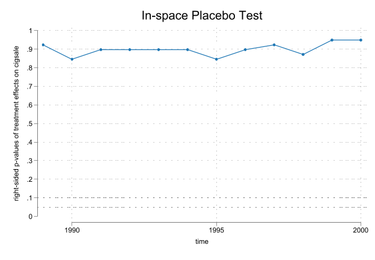
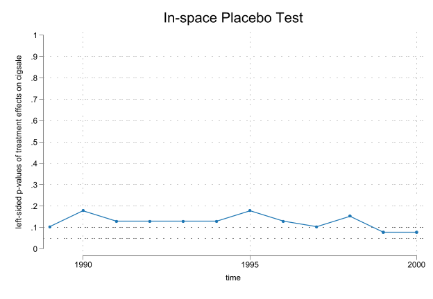
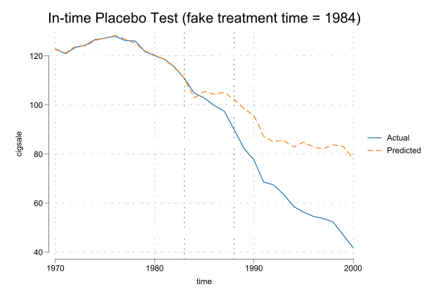
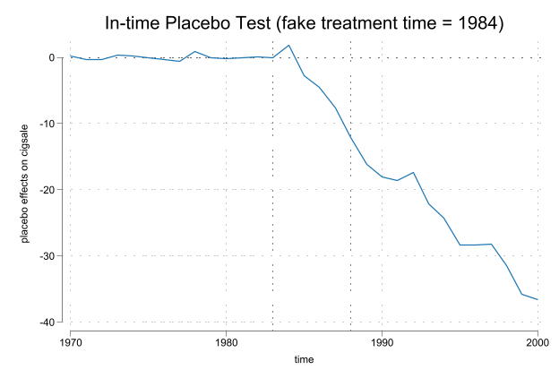
小结：
从上述结果来看，RCM 的反事实构造与 SCM 相比，拟合更好、gap 更小，但系数解释不再直观。安慰剂检验显示，真实加州的 gap 在对照组中显著异常，支持政策效应的存在。
然而，时间安慰剂检验显示，若把处理年份提前到 1984 年，仍然测出明显 gap，说明 RCM 在政策前时期的拟合可能存在过度拟合的风险。可以考虑在政策前时期增加更多预测变量，或使用更严格的正则化方法（如 adaptive-CV）来缓解过拟合。
G.6 合成 DID（SDID）
SDID 同时给单位和时间加权。sdid 命令（Clarke 等）语法为 sdid Y S T D，其中 D 是二元处理变量。SDID 部分使用 Clarke 提供的 prop99_example.dta（与前面同案例、不同整理版本，处理变量已命名为 treated）。
webuse set www.damianclarke.net/stata/
webuse prop99_example.dta, clear
encode state, gen(id_state)
xtset id_state year
xtdes // 确认为强平衡面板：39 州 × 31 年(prefix now "http://www.damianclarke.net/stata")
Panel variable: id_state (strongly balanced)
Time variable: year, 1970 to 2000
Delta: 1 unit
id_state: 1, 2, ..., 39 n = 39
year: 1970, 1971, ..., 2000 T = 31
Delta(year) = 1 unit
Span(year) = 31 periods
(id_state*year uniquely identifies each observation)
Distribution of T_i: min 5% 25% 50% 75% 95% max
31 31 31 31 31 31 31
Freq. Percent Cum. | Pattern
---------------------------+---------------------------------
39 100.00 100.00 | 1111111111111111111111111111111
---------------------------+---------------------------------
39 100.00 | XXXXXXXXXXXXXXXXXXXXXXXXXXXXXXX基础用法：vce(placebo) 用安慰剂法做推断（适合单一处理组的情形），seed() 固定随机种子以复现。
sdid packspercapita state year treated, vce(placebo) seed(1213)Placebo replications (50). This may take some time.
----+--- 1 ---+--- 2 ---+--- 3 ---+--- 4 ---+--- 5
.................................................. 50
Synthetic Difference-in-Differences Estimator
-----------------------------------------------------------------------------
packsperca~a | ATT Std. Err. t P>|t| [95% Conf. Interval]
-------------+---------------------------------------------------------------
treated | -15.60383 9.87941 -1.58 0.114 -34.96712 3.75946
-----------------------------------------------------------------------------
95% CIs and p-values are based on large-sample approximations.
Refer to Arkhangelsky et al., (2021) for theoretical derivations.输出解读：ATT ≈ −15.60（packs per capita），安慰剂标准误约 9–10，p 值约 0.08–0.11（因随机抽样，换 seed 或 reps 会略有变化）。这是 SDID 对全体政策后时期加权平均的 ATT。
带图输出：graph 选项出两张图——趋势图（真实 vs 合成加州）与权重图（单位权重 + 时间权重）。graph_export(stub, .png) 会自动生成 stub_trendsYYYY.png 和 stub_weightsYYYY.png（YYYY 为处理年份 1989）。这是正文 图 5.4 的来源。
#delimit ;
sdid packspercapita state year treated,
vce(placebo) seed(1213) reps(100)
graph g1on
g2_opt(ylabel(0(25)150) ytitle("Packs per capita") scheme(white_tableau))
g1_opt(xtitle("") ylabel(-35(5)10) scheme(white_tableau))
graph_export(SDID_cig_002, .png);
#delimit crPlacebo replications (100). This may take some time.
----+--- 1 ---+--- 2 ---+--- 3 ---+--- 4 ---+--- 5
.................................................. 50
.................................................. 100
Synthetic Difference-in-Differences Estimator
-----------------------------------------------------------------------------
packsperca~a | ATT Std. Err. t P>|t| [95% Conf. Interval]
-------------+---------------------------------------------------------------
treated | -15.60383 9.68177 -1.61 0.107 -34.57975 3.37209
-----------------------------------------------------------------------------
95% CIs and p-values are based on large-sample approximations.
Refer to Arkhangelsky et al., (2021) for theoretical derivations.
(file SDID_cig_002weights1989.png not found)
file SDID_cig_002weights1989.png written in PNG format
(file SDID_cig_002trends1989.png not found)
file SDID_cig_002trends1989.png written in PNG format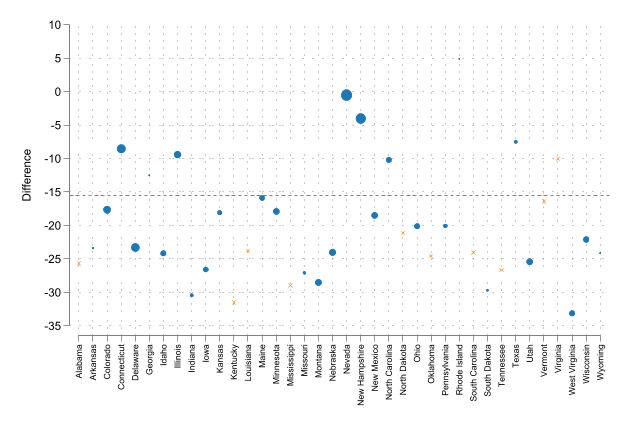
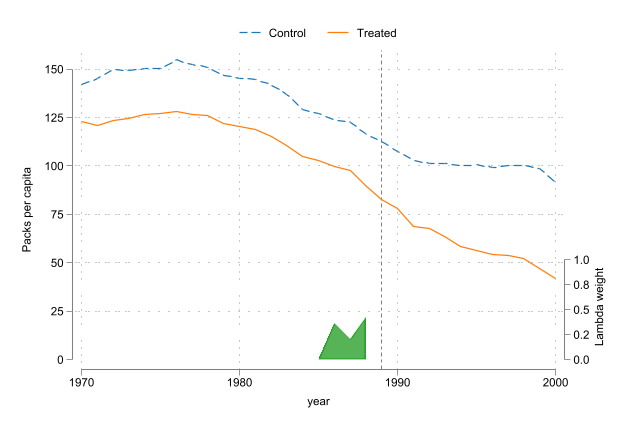
三种方法同框对比（正文数值对比的来源）
sdid 的 method() 选项可一键切换 SDID / DID / SC，用同一份数据、同一套绘图参数跑三遍，最能看清三者差异。vce(noinference) 跳过推断、只出点估计与图，加快速度。
global yx "packspercapita state year treated"
global scheme "scheme(white_tableau)"
* SDID
sdid $yx, method(sdid) vce(noinference) graph ///
g1_opt(ylabel(-110(20)50) xtitle("") $scheme) g1on ///
g2_opt(ylabel(0(25)150) ytitle("Packs per capita") $scheme) ///
graph_export(comp_cig_01_sdid, .png)
* DID
sdid $yx, method(did) vce(noinference) graph msize(small) ///
g1_opt(ylabel(-110(20)50) xtitle("") $scheme) g1on ///
g2_opt(ylabel(0(25)150) ytitle("Packs per capita") $scheme) ///
graph_export(comp_cig_02_did, .png)
* SC
sdid $yx, method(sc) vce(noinference) graph msize(small) ///
g1_opt(ylabel(-110(20)50) xtitle("") $scheme) g1on ///
g2_opt(ylabel(0(25)150) ytitle("Packs per capita") $scheme) ///
graph_export(comp_cig_03_sc, .png)
Synthetic Difference-in-Differences Estimator
-----------------------------------------------------------------------------
packsperca~a | ATT Std. Err. t P>|t| [95% Conf. Interval]
-------------+---------------------------------------------------------------
treated | -15.60383 . . . . .
-----------------------------------------------------------------------------
95% CIs and p-values are based on large-sample approximations.
Refer to Arkhangelsky et al., (2021) for theoretical derivations.
(file comp_cig_01_sdidweights1989.png not found)
file comp_cig_01_sdidweights1989.png written in PNG format
(file comp_cig_01_sdidtrends1989.png not found)
file comp_cig_01_sdidtrends1989.png written in PNG format
Difference-in-Differences Estimator
-----------------------------------------------------------------------------
packsperca~a | ATT Std. Err. t P>|t| [95% Conf. Interval]
-------------+---------------------------------------------------------------
treated | -27.34911 . . . . .
-----------------------------------------------------------------------------
95% CIs and p-values are based on large-sample approximations.
(file comp_cig_02_didweights1989.png not found)
file comp_cig_02_didweights1989.png written in PNG format
(file comp_cig_02_didtrends1989.png not found)
file comp_cig_02_didtrends1989.png written in PNG format
Synthetic Control
-----------------------------------------------------------------------------
packsperca~a | ATT Std. Err. t P>|t| [95% Conf. Interval]
-------------+---------------------------------------------------------------
treated | -19.61966 . . . . .
-----------------------------------------------------------------------------
95% CIs and p-values are based on large-sample approximations.
(file comp_cig_03_scweights1989.png not found)
file comp_cig_03_scweights1989.png written in PNG format
(file comp_cig_03_sctrends1989.png not found)
file comp_cig_03_sctrends1989.png written in PNG format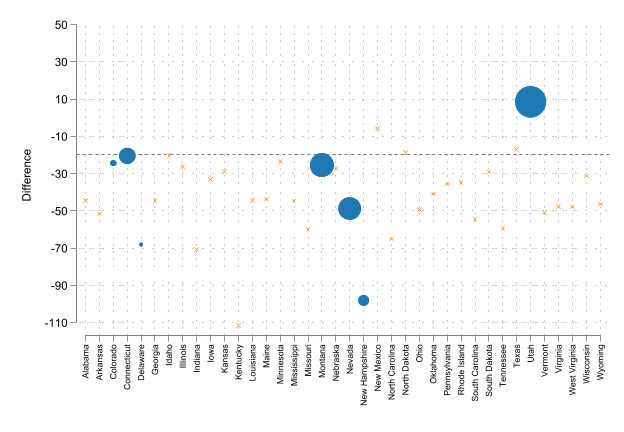
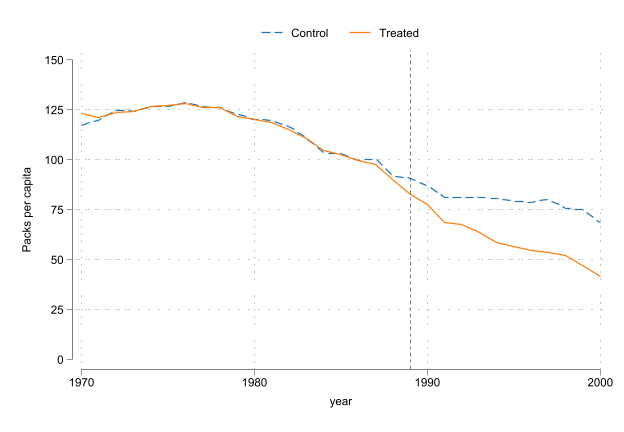
G.7 数值汇总与口径说明
三种方法在加州数据上给出的 ATT（均为 packs per capita）：
| 方法 | 命令 | ATT | 口径 |
|---|---|---|---|
| DID | sdid, method(did) |
−27.3 | 双向 FE、等权平均，政策后全期 |
| SC | sdid, method(sc) |
−19.6 | 单位加权，政策后全期 |
| SDID | sdid, method(sdid) |
−15.6 | 单位+时间加权，政策后全期 |
| RCM | rcm, method(lasso) |
−23.1 | post-lasso 预测，政策后期简单平均 |
为什么数值不同？ 这不是「谁算错了」，而是反事实构造方式不同的直接后果：
- DID 用等权平均，最受「加州与对照州长期趋势不平行」的拖累，绝对值最大；
- SC 用截面加权贴近加州，缓解了不平行；
- SDID 再叠加时间加权，把更多权重放在与政策期更相关的年份，进一步收窄；
- RCM 的 −23.1 与前三者口径不同（政策后期简单平均、且样本/命令实现不同），不能与 SDID 的 −15.6 直接比大小。
教学要点：第五章正文只作定性结论（不同方法给出不同数值，因反事实构造方式不同）。若在论文里报告，务必标注每个数字的口径（加权方式、时间范围、推断方法），避免读者误以为某个数「最准」。真正稳健的做法是像 Lane (2025) 那样报告多种方法、看结论方向是否一致，而非纠结单一点估计。
G.8 延伸与本附录的边界
本附录只做「怎么用」。以下内容留给正文、第七章或专门文献：
- SDID 的推导（个体权重与时间权重的优化问题、bootstrap/jackknife 方差、DID/SC/SDID 三估计量的统一形式）见第五章 SDID 幻灯片与 Arkhangelsky et al. (2021)、Clarke et al. (2023)；
- RDD 的实操（带宽、局部多项式、密度操纵检验、稳健偏差校正）本案例数据不适用，见第七章扩展阅读中的 Calonico–Cattaneo–Titiunik 系列；
- 交错处理下的 DID 方法选择（Goodman-Bacon 分解、csdid、Sun–Abraham、BJS 等）是第六章的主题；
- 机器学习预测反事实/nuisance function（DDML）是第七章的主题，与 F.4–F.5 的「放开约束 + 正则化」思路一脉相承。
参考文献
- Abadie, A., Diamond, A., & Hainmueller, J. (2010). Synthetic control methods for comparative case studies: Estimating the effect of California’s tobacco control program. Journal of the American Statistical Association, 105(490), 493–505. Link, PDF, Google.
- Arkhangelsky, D., Athey, S., Hirshberg, D. A., Imbens, G. W., & Wager, S. (2021). Synthetic difference-in-differences. American Economic Review, 111(12), 4088–4118. Link, PDF, Google.
- Angrist, J. D., & Lavy, V. (1999). Using Maimonides’ rule to estimate the effect of class size on scholastic achievement. The Quarterly Journal of Economics, 114(2), 533–575. Link, PDF, Google.
- Ciccia, D. (2024). A short note on event-study synthetic difference-in-differences estimators. arXiv:2407.09565. Link, PDF, Google.
- Clarke, D., Pailañir, D., Athey, S., & Imbens, G. (2024). On synthetic difference-in-differences and related estimation methods in Stata. The Stata Journal, 24(4), 557–598. Link, PDF, Google. github
- Lee, D. S. (2008). Randomized experiments from non-random selection in U.S. House elections. Journal of Econometrics, 142(2), 675–697. Link, PDF, Google.
- Yan, G., & Chen, Q. (2022). rcm: A command for the regression control method. The Stata Journal, 22(4), 842–883. Link, PDF, Google.
- Yan, G., & Chen, Q. (2023). synth2: Synthetic control method with placebo tests, robustness test, and visualization. The Stata Journal, 23(3), 597–624. Link, PDF, Google.